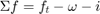
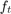
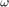
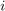
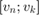
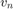
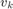
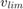
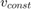
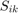

Режим тяги для модели "МАТЕРИАЛЬНАЯ ТОЧКА"
Определяются параметры движения поезда в режиме тяги
Contents
Синтаксис вызова функции
function [ s ] = throtle_pnt(tx,pr,w,vn,vlim, sn,tn,sk )
tx - удельная тяговая характеристика pr - элемент профиля пути w - основное удельное сопротивление движению поезда vn - начальная скорость режима тяги vlim - ограничение по скорости (максимальная скорость до которой можем разогнаться) sn - начальная координата режима тяги tn - начальное время режима тяги sk - конечная точка движения
Глобальные переменные
global traction global mp global ml global ksi
traction - _ *не помню что это такое, но видимо надо* _ mp - масса поезда ml - масса локомотива ksi- переводной коэффициент
Коэффициенты результирующей силы тяги на участке
Для определения параметров движения необходимо определить результирующию силу, действующую на поезд в режиме тяги:
,
где  - удельная сила тяги электровоза,  - удельное основное сопротивление движению поезда,  - дополнительное сопротивление движению поезда от профиля пути
cfr(1,1)=tx(1,4)-w(1,1)-pr(1,3);
cfr(1,2)=tx(1,5)-w(1,2);
cfr(1,3)=tx(1,6)-w(1,3);
f=0; % флаг, нужно вспомнить, за каким он мне нужен
Not enough input arguments. Error in throtle_pnt (line 35) cfr(1,1)=tx(1,4)-w(1,1)-pr(1,3);
Вспомогательные расчеты для режима тяги
На заданном интрвале скоростей  определяем значение результирующей силы для скорости равной  и скорости равной , если результирующая сила меняет знак, то на заданном интервале скоростей существует установившийся режим, т.е. движение с постоянной скоростью. Находим скорость установившегося режима v_const
fres_vn=f_res(cfr,vn); %скорость в начале интервала скоростей fres_vk=f_res(cfr,tx(1,3)); %скорость в конце интервала скоростей if ((fres_vn>0) && (fres_vk<0)) || ((fres_vn<0) && (fres_vk>0)) % если знак меняется v_const=fzero(@(x) f_res(cfr,x),[vn tx(1,3)]); % находим скорость установившегося режима else v_const=-1; % если знак не меняется скорость установившегося режима -1 end
Постоянные интегрирования по пути и по времени
sc=SVCurve(cfr,vn); tc=TVCurve(cfr,vn);
Определяем реальную скорость . Скорость в конце разгона для расчетного интервала меняется если, заданная скорость больше ограничения скорости , или больше , или при заданной скорости в конце разгона, поезд проезжает конечную координату текущего профиля пути 
С учетом указанных ограничений выбираем необходимую скорость
if v_const<0 %выбираем меньшую скорость из vk, vlim, v_const v_min(1,1)=tx(1,3); v_min(1,2)=vlim; vk=min(v_min); else v_min(1,1)=tx(1,3); v_min(1,2)=vlim; v_min(1,3)=v_const; vk=min(v_min); end % уточняем скорость vk с учетом конечной координаты профиля пути Stmp=SVCurve(cfr,vk)-sc; if sk>=(pr(1,2)+pr(1,4)) % конечная координата расчета на текущем элементе профиля? if Stmp+sn>pr(1,4)+pr(1,2) vk=fzero(@(x) (SVCurve(cfr,x)-sc+sn-pr(1,4)-pr(1,2)), [vn vk]); f=1; end else % нет, не на текущем if Stmp+sn>sk vk=fzero(@(x) (SVCurve(cfr,x)-sc+sn-sk), [vn vk]); end end
для известного интервала скоростей, определяем статистические параметры движения поезда:
математическое ожидание
Mv=vk-(quad(@(x) (SVCurve(cfr,x)-sc),vn,vk))/(SVCurve(cfr,vk)-sc); %дисперсия Dv=(ksi./(SVCurve(cfr,vk)-sc)).*(quad(@(x) ((x-Mv).^2.*x./(cfr(1,1)+cfr(1,2).*x+cfr(1,3).*x.^2)),vn,vk)); % энергия на перемещение поезда A=2.725*10^(-3)*(ml+mp)*(cfr(1,1)+cfr(1,2)*Mv+cfr(1,3)*Mv^2+Dv*cfr(1,3))*(SVCurve(cfr,vk)-sc); dv=(vk-vn)/10; c=1;
Результаты расчета на текущем интервале
for i=vn:dv:vk s(c,1)=i; %скорость движения s(c,2)=SVCurve(cfr,i)-sc+sn; %координата пути s(c,3)=TVCurve(cfr,i)-tc+tn; %время в пути s(c,4)=vlim; %ограничение скорости s(c,5)=v_const; %скорость установившегося режима s(c,6)=f_res(cfr,i); %удельная результирующая сила действующая на поезд s(c,7)=pr(1,3); %значение уклона s(c,8)=Mv; %математическое ожидание s(c,9)=Dv; %Дисперсия скорости s(c,10)=A; c=c+1; end c=c-1; s(c,1)=vk; if f==1 s(c,2)=pr(1,2)+pr(1,4); else s(c,2)=SVCurve(cfr,vk)-sc+sn; end s(c,3)=TVCurve(cfr,vk)-tc+tn; s(c,4)=vlim; %ограничение скорости s(c,5)=v_const; %скорость установившегося режима s(c,6)=f_res(cfr,vk); %удельная результирующая сила действующая на поезд s(c,7)=pr(1,3); %значение уклона
end